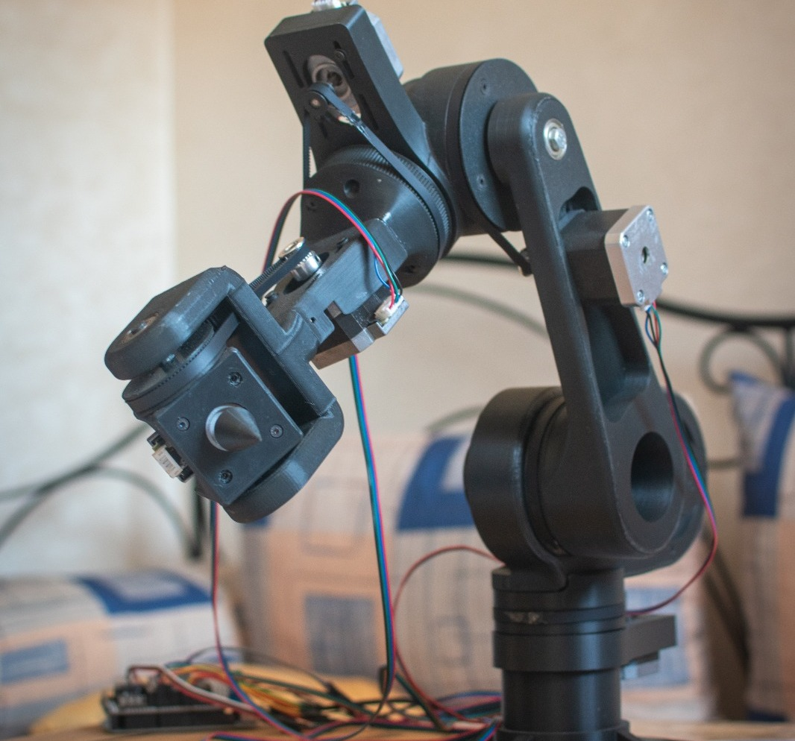
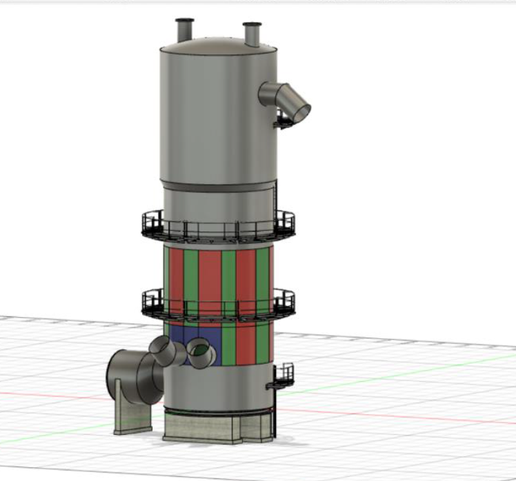
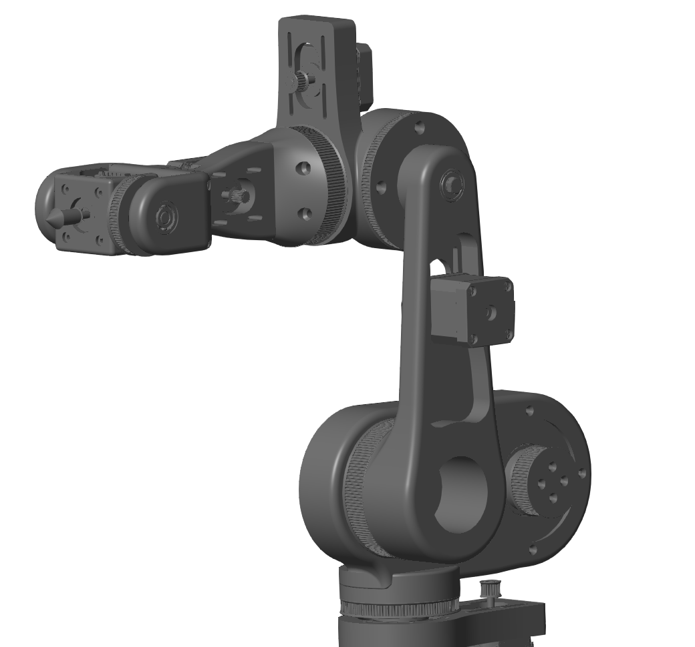
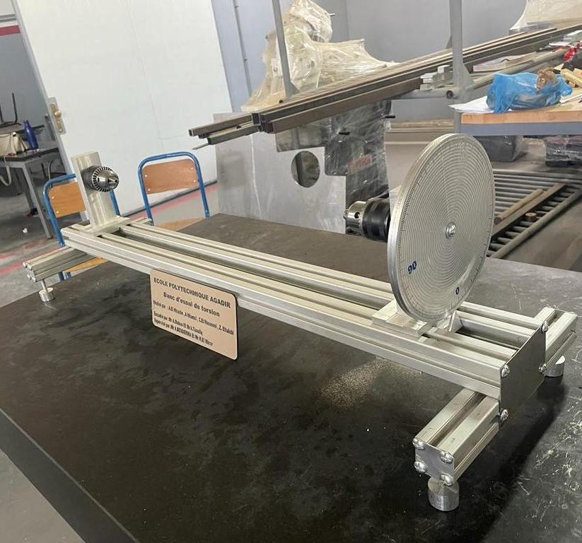
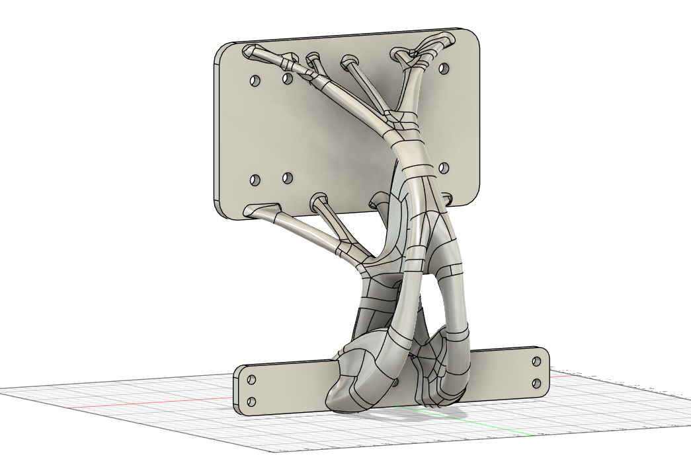

FLAGSHIP PROJECT
Planar Bipedal Robot
I design, build and control robotic hardware. Right now: a planar bipedal robot I took from CAD to walking trials at Bournemouth University.

Iteratively developed from 3DOF to 6DOF with evolving drive technology and a two-layer control system: ROS + MoveIt for inverse kinematics, Python for real-time motor commands.

Root cause analysis, SolidWorks 3D modelling, and ANSYS structural simulation of a heat recovery tower, culminating in a shell replacement procedure that raised line availability by 15%.

Full Lagrangian dynamics derivation, Jacobian linearisation, Lyapunov stability analysis, and MATLAB Simscape PID simulation achieving sub-millimetre trajectory tracking.

Designed and manufactured an educational torsion rig from scratch using reverse engineering principles. Replaced the external comparator with a graduated pulley, cutting setup time by 80%.
Quantified life cycle analysis and topology-optimised redesign of a mechanical lifting jack, cutting its carbon footprint from 560 to 440 kg CO₂, a 22% reduction, while preserving structural performance.
Designed and coded a PID temperature control system from scratch for a sardine canning cooking installation, prototyped and validated on Arduino hardware.
International interdisciplinary challenge to address Tanzania's drowning crisis. Led the engineering side, ensuring ISO 12402 buoyancy compliance using locally sourced materials including packaging fabric and PET bottles.

Sheet metal component redesigned using a generative design process, earning an honourable mention for the balance of structural performance, manufacturability, and material efficiency.
Grant-funded MSc project continued after graduation, supervised by Dr Behnam Dadashzadeh.
READ THE PROJECT →Dissertation: “Design, Manufacture and Model-Based Control of a Planar Bipedal Robot”, grant-funded by Bournemouth University.
Design release of a hydrogen fuel cell system for a heavy-duty truck, with teams in four countries. Supported removal of the turbine bypass (€32.50 saved per part) and validated the “eBurn” energy-dissipation function.
Root cause analysis, SolidWorks and ANSYS modelling, and a shell replacement procedure that raised line availability by 15%.
READ THE PROJECT →Thesis on the PS III sulphuric acid line, carried out at OCP Group.
Redesigned and machined an educational torsion test bench, cutting setup time by 80%.
READ THE PROJECT →Thesis: design and implementation of a PID temperature control system for a sardine canning cooking installation.